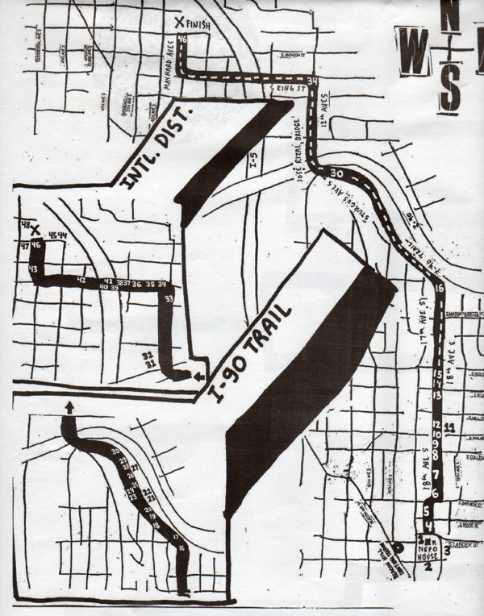

NEPO 5K DON'T RUN 2012: SCHEDULE
Date: Saturday September 8, 2012
2:30- 4:00pm START/REGISTRATION by Vis-a-Vis Society @ NEPO HOUSE
2:30- 6:00pm DON'T RUN
5:00-10:00pm FINISH @ KOBE TERRACE PARK

START at NEPO House on Beacon Hill (1723 S Lander Street, Seattle, WA 98144)
FINISH in front of Kobe Terrace Park in the International District (S Main Street and Maynard Avenue S)
What else you need to know: event is free to the public, we ask for suggested donation of $5 to help us offset costs -- participants of all ages are welcome -- we encourage taking Light Rail to the start, NEPO House is located one block from Beacon Hill Light Rail Station. If you choose to drive, paid parking is available across the street from the station.
FINISH-LINE events at Kobe Park
Art / Music / Performances5:00- 7:00pm Bavarian Village Band
7:00- 8:00pm Daipan Butoh and Roz Band
8:00- 9:00pm Airport
9:00-10:00pm DJ Never Leaves
Drink or Don't Drink Garden
Food Trucks
Interstitial Theatre's Mobile Screen
Featuring five video pieces that together explore ideas connected to how we define, understand and represent landscape in relation to contemporary urbanism.
INbetweenLINES by Alice Gosti
Mossgrove/Bed of Moss by Kurtis Hough
Savannah Botanical II & Liian Paljon Aikaa Metsassa by Derek Larson
untitled paths by Julia Bruk
LxWxH pop-up shop
LxWxH is a community supported subscription project featuring original art and literature. Each issue is a limited run box containing two original pieces by two artists, and a short essay by a local writer. This project was founded by Seattle artist and curator Sharon Arnold.
Cullom Gallery MONEY TALKS
Massachusetts artist Annie Bissett has been making money, and she will be on hand at Cullom Gallery for a printing demonstration and an open discussion about how to make money as an artist. During the event, Annie will be printing and distributing a new limited edition of credit cards. These cards include a special strip containing a code that will allow you to take financial risks just like real Wall Street financiers do.
Wing Luke Museum of the Asian Pacific American Experience (719 South King St.)
The Wing's Marketplace is offering extended hours on September 8th in support of NEPO 5k and will be open until 6 p.m. Participants are encouraged to stop into the store for 10% off refreshments and a free temporary dragon tattoo designed by artist Ken Taya (Enfu) with purchase, while supplies last. Please note the Museum galleries close at 5 p.m.
ARTISTS // CURATORS // LOCATION and SCHEDULE // PRESS and SPONSORS